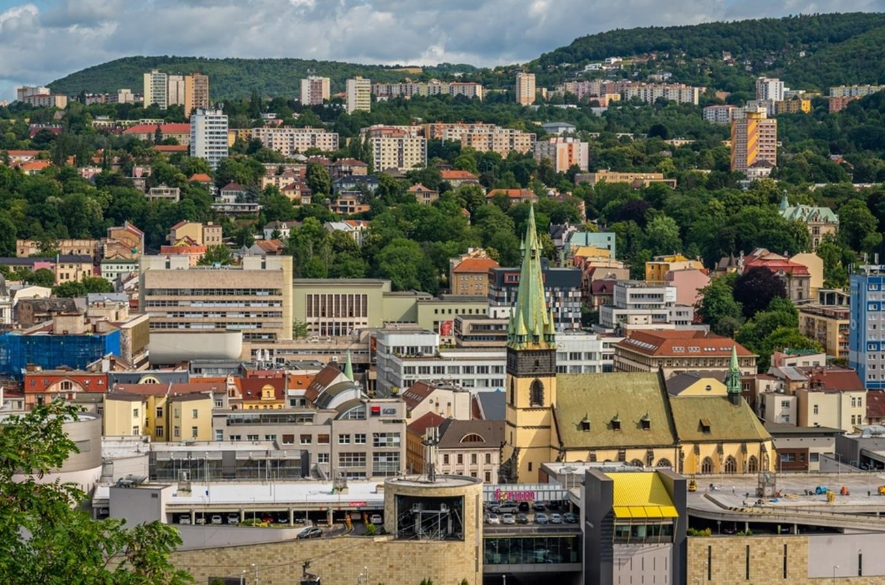
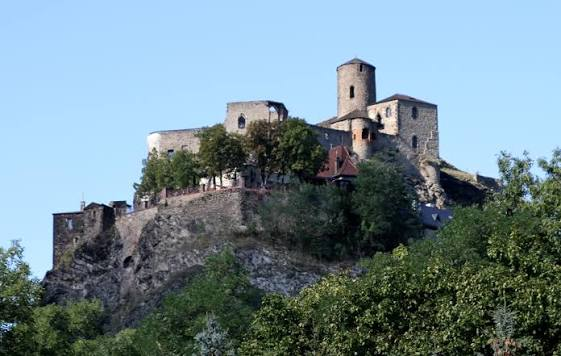
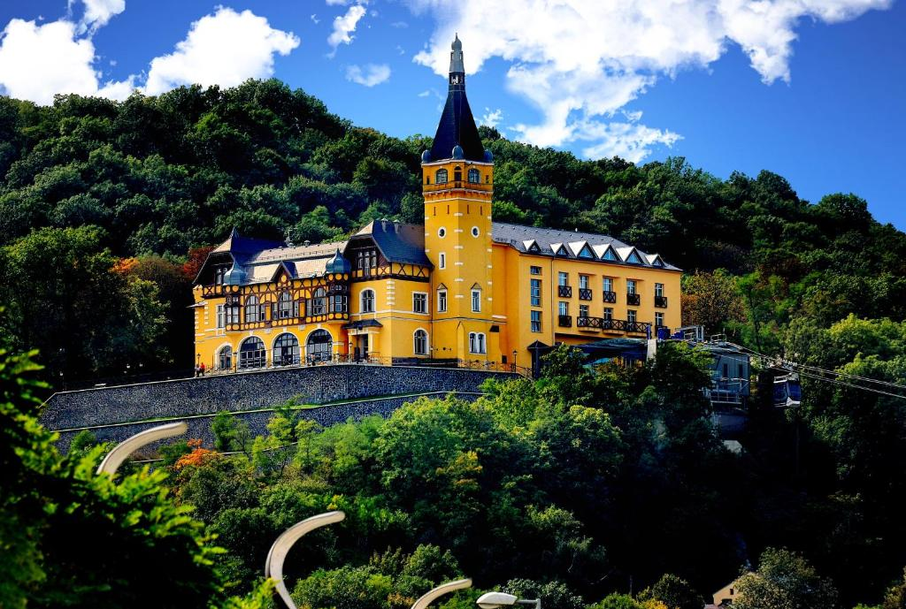
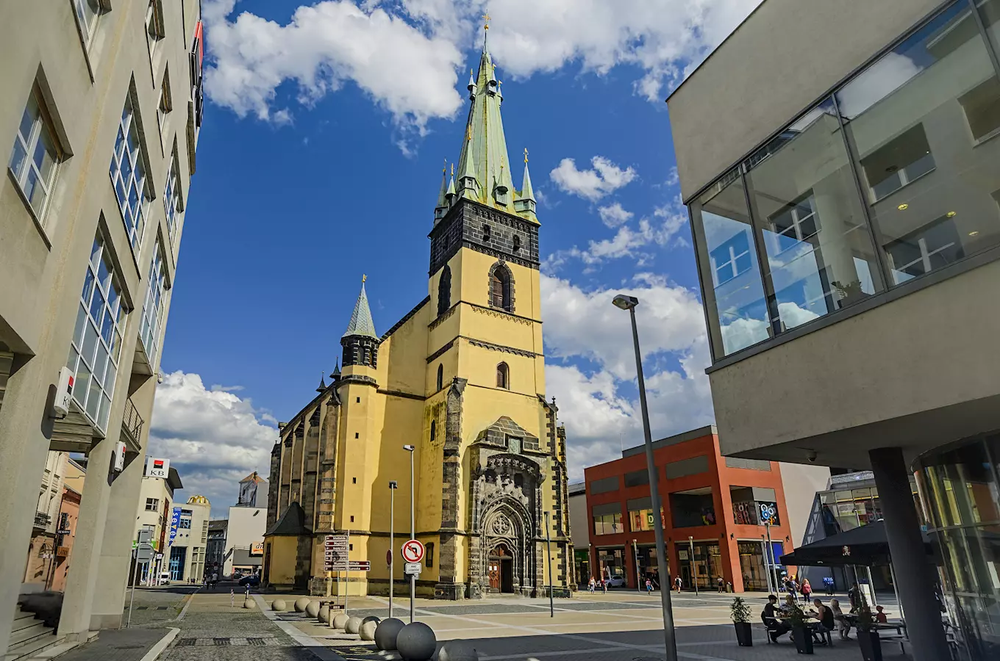

Discover a city surrounded by dramatic landscapes, famous for its hilltop castle, beautiful river views and impressive natural surroundings.
Ústí nad Labem is a city in northern Bohemia and the capital of the Ústí nad Labem Region. Located along the Elbe River, it has been an important centre of trade and industry for centuries.
The city is surrounded by the beautiful landscapes of the Central Bohemian Uplands and the Elbe River valley. Its combination of historic landmarks, industrial heritage and nearby natural attractions makes it an interesting destination to explore.
Ústí nad Labem Region
Czechia
Elbe River and surrounding landscapes
Střekov Castle
Střekov Castle is one of the most famous landmarks in Ústí nad Labem. Built on a steep rocky cliff above the Elbe River, it offers spectacular views of the surrounding landscape.
The castle was founded in the 14th century to protect an important trade route along the river. Today, visitors can explore its historic ruins, learn about its past and enjoy the beautiful views of the Elbe valley.

Větruše is a popular tourist destination overlooking Ústí nad Labem. The historic chateau stands on a hill above the city and offers beautiful panoramic views of the Elbe River and the surrounding landscape.
The building has a long history and today serves as a hotel and restaurant. Visitors can reach Větruše by cable car from the city centre and enjoy walks in the nearby park and countryside.

The Church of the Assumption of the Virgin Mary is one of the most recognizable historic buildings in Ústí nad Labem. Located near the city centre, it is famous for its unusually leaning tower.
The church was built in the Gothic style in the 14th century and was badly damaged during an air raid in 1945. The bombing caused its tower to tilt, making it one of the most unusual landmarks in the Czech Republic.

Approx. 91,000 residents
Approx. 94 km²
993
Elbe River